COOL GRAY · BLUE GRAY · CHARCOAL
기술이 이미 일상에 흡수된 차갑고 현실적인 근미래 서울.
AI CINEMATIC CONCEPT TEASER
기억을 사고팔 수 있는 2049년 서울. 가장 소중한 기억을 판매한 한 여성이 자신에게서 사라진 기억의 흔적을 다시 마주하게 되는 57초 AI 시네마틱 콘셉트 티저입니다.
Concept · Story · Art Direction · AI Visual · AI Video · Editing · Sound Design
WATCH FILM ↓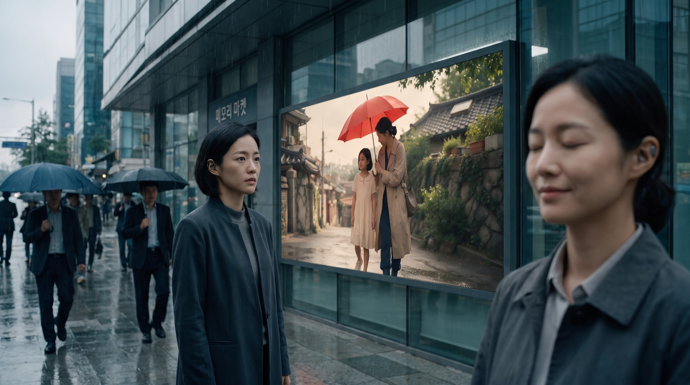
01
Concept Development · Storytelling · Visual Direction · Character Design & Consistency · AI Image Generation · AI Video Generation · Editing · Sound Design
생성형 AI를 단순한 장면 제작 도구로 사용하는 데 그치지 않고, 세계관과 캐릭터를 먼저 설계한 뒤 장면별 구도, 카메라 움직임, 색감, 모델 선택, 편집과 사운드까지 하나의 영상 언어로 통합했습니다.
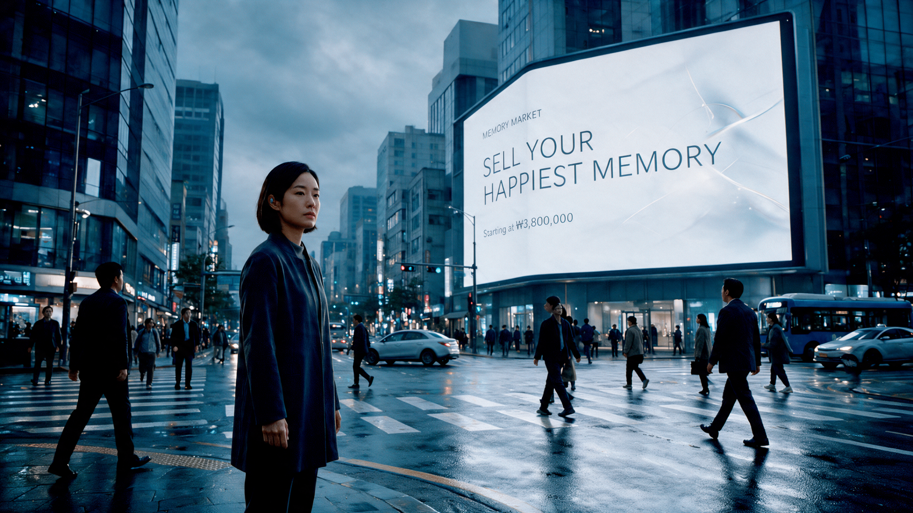
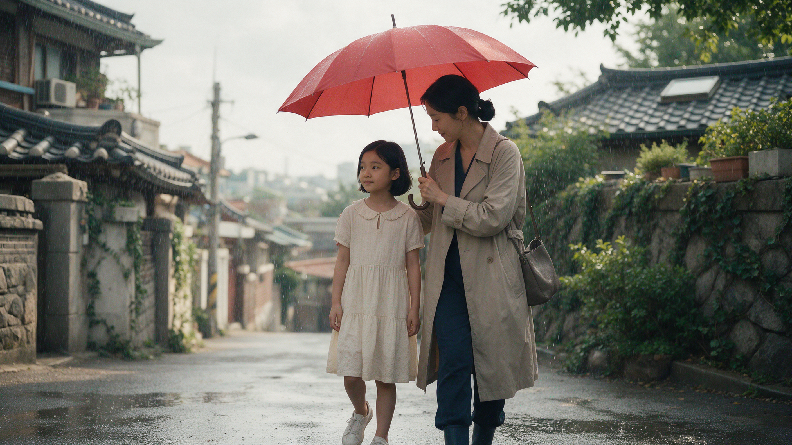
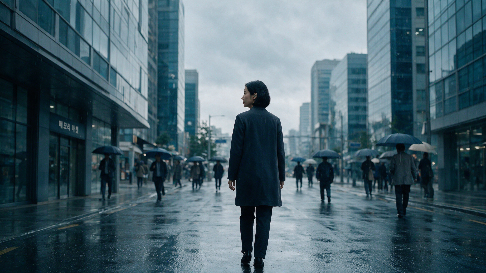
02
기억이 상품이 된 도시에서, 자신의 가장 행복했던 순간을 판매한 한 사람의 이야기.
03
IF YOUR MEMORIES DISAPPEAR, ARE YOU STILL YOU?
2049년 서울에서는 인간의 기억을 추출하고 사고팔 수 있습니다.
경제적 압박을 받고 있던 한 여성은 어린 시절 엄마와 함께했던 가장 소중한 기억을 판매합니다. 여름비가 내리던 골목, 하나의 빨간 우산 아래에서 함께 걸었던 순간입니다.
거래가 끝난 뒤 기억은 그녀에게서 사라지고, 이후 자신이 잃어버린 기억이 다른 사람의 행복한 경험으로 소비되고 있는 순간을 마주하게 됩니다.
VISUAL MOTIF
현재의 서울은 차갑고 절제된 회색과 청회색으로 표현하고, 기억 속 빨간 우산만을 강한 색으로 남겼습니다. 빨간 우산은 사랑했던 순간이자, 사라진 기억의 흔적을 상징합니다.
04
동일 인물을 여러 장면에서 유지하기 위해 캐릭터 MASTER를 먼저 구축했습니다. 얼굴형, 눈매, 단발 헤어, 의상, 체형과 귀 인터페이스를 기준으로 정면·3/4·측면·전신 이미지를 이후 모든 장면의 기준 이미지로 활용했습니다.
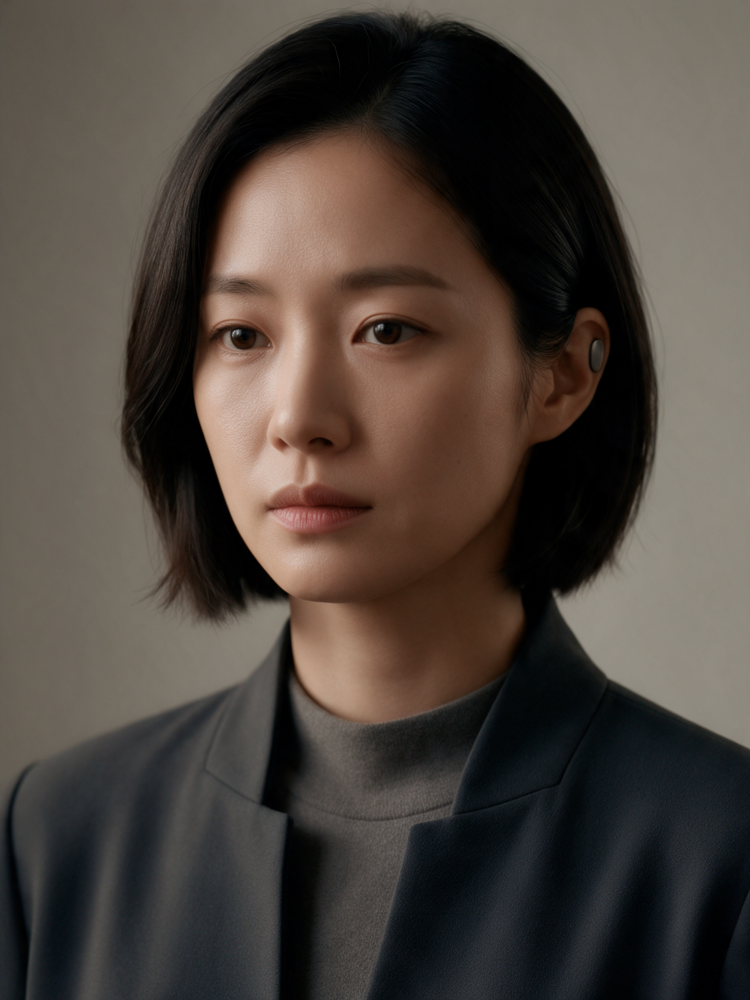
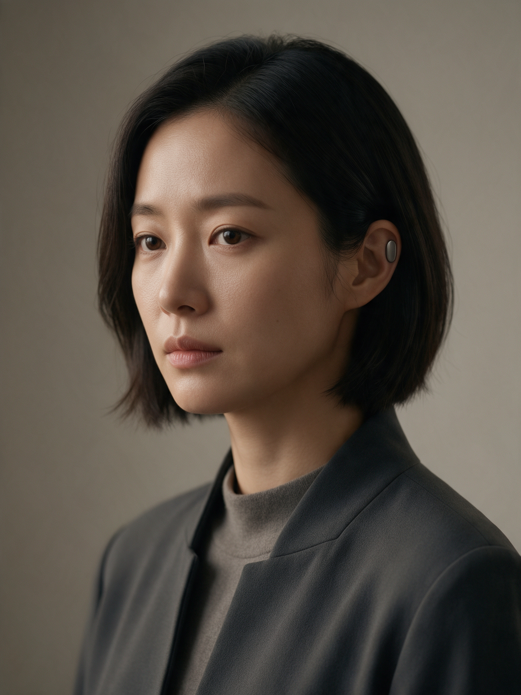
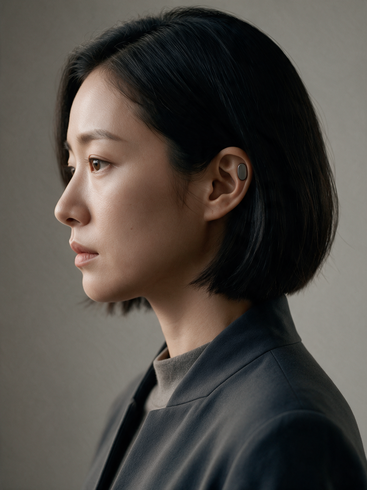
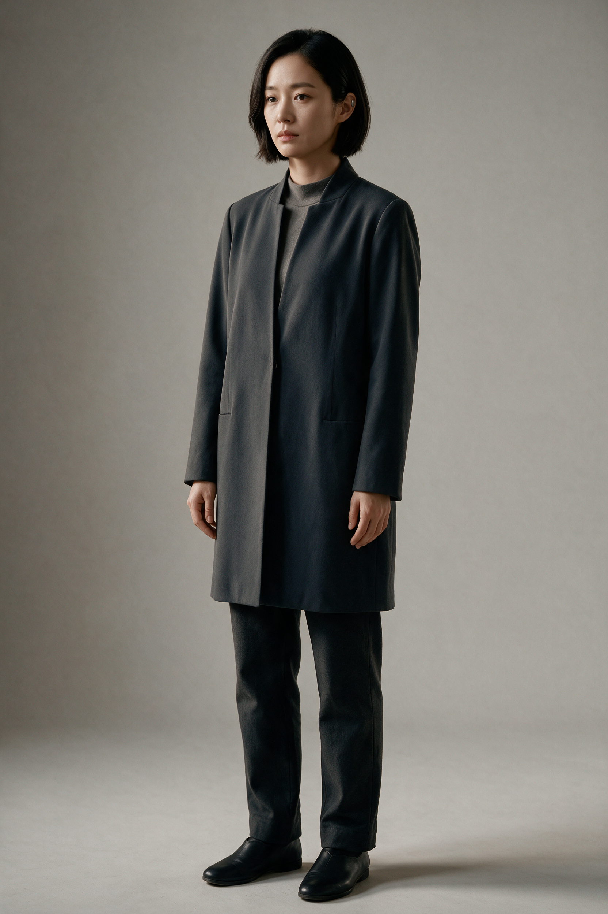
기술이 이미 일상에 흡수된 차갑고 현실적인 근미래 서울.
따뜻한 자연광과 빨간 우산을 중심으로 현재와 명확히 분리된 기억의 세계.
05
비 오는 서울 도심의 광고판을 통해 기억 판매라는 세계관을 첫 장면에서 제시합니다.
엄마와 어린 MC01이 하나의 빨간 우산 아래 걷는 가장 소중한 기억입니다.
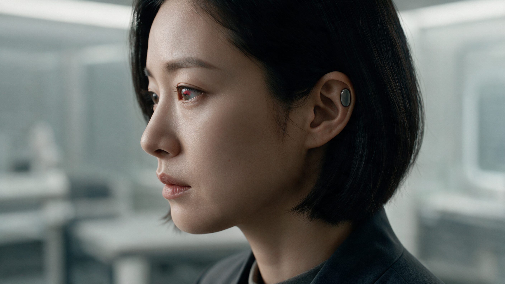
SCENE 07붉은 기억의 흔적이 서서히 사라지며 기억이 제거되는 순간을 절제된 방식으로 표현했습니다.
다른 사람이 MC01의 기억을 경험하는 순간을 하나의 프레임 안에서 보여주는 HERO SHOT입니다.
기억을 잃은 MC01은 아무 일 없다는 듯 계속 움직이는 서울 속으로 걸어갑니다.
06
하나의 생성 모델에 의존하지 않고, 장면 특성에 따라 이미지와 영상 모델을 비교하고 가장 안정적인 결과를 선택했습니다.
캐릭터의 얼굴, 헤어, 의상과 체형을 먼저 고정.
Seedream과 Nano Banana Pro를 활용해 장면별 MASTER 이미지를 제작.
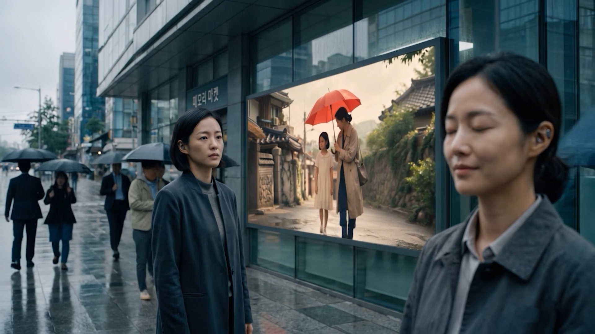
Omni · Kling · Veo 결과를 비교해 장면별 최종 영상을 선택.
인물, 구매자, 외벽 디스플레이가 동시에 존재하는 복잡한 HERO SHOT을 여러 모델로 테스트한 뒤, 인물과 디스플레이의 안정성, 공간감과 움직임을 비교해 Kling 3.0 결과를 최종 선택했습니다.
07
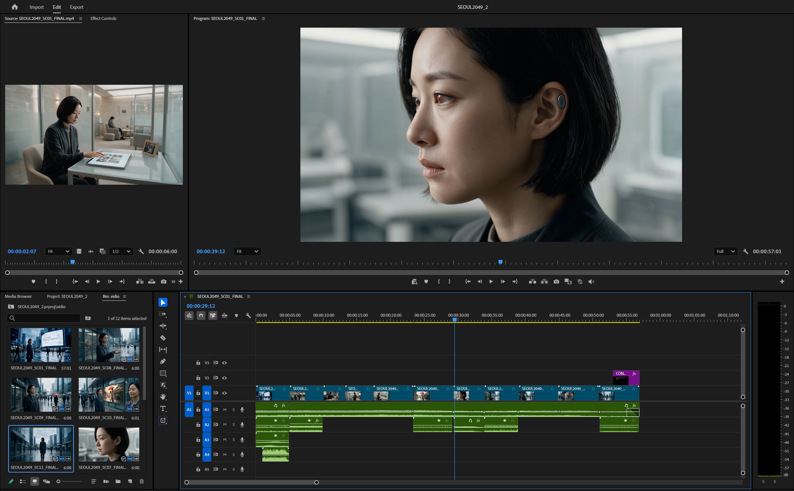
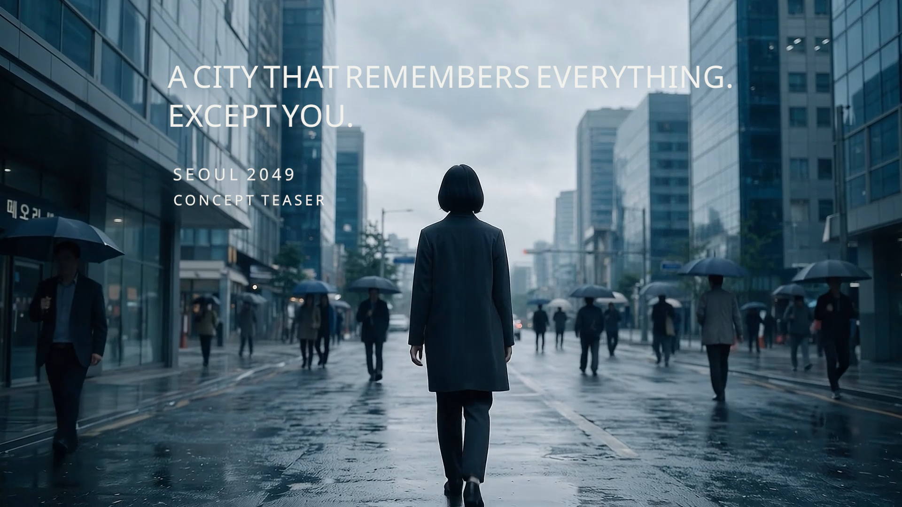
Felt Piano와 낮은 Ambient Pad를 중심으로 미니멀한 BGM을 구성했습니다.
따뜻한 여름비, 차가운 현실의 비, 기억 추출과 도시 환경음을 장면별로 제작했습니다.
FINAL RESULT
생성 결과 자체보다 어떤 장면을 만들 것인지, 어떤 모델을 선택할 것인지, 무엇을 수정하고 무엇을 버릴 것인지 판단하는 과정에 집중했습니다.